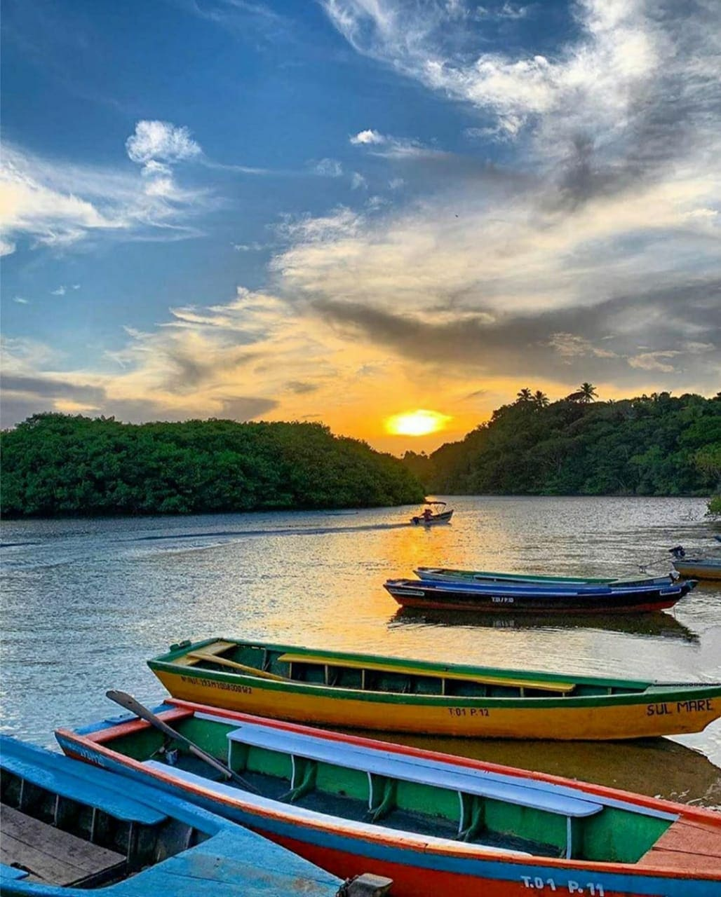

Guia de viagem
Como chegar a Caraíva saindo de Porto Seguro
Atualizado em novembro de 2026

Caraíva fica no município de Porto Seguro, a cerca de 60 a 70 km do aeroporto. A viagem leva de 2h a 2h30, com trecho de estrada de terra, e termina com uma travessia de canoa, porque carros não entram na vila.
Opções de transporte
| Opção | Por onde vai | Tempo aproximado |
|---|---|---|
| Carro pela balsa | Balsa até Arraial d'Ajuda, depois sentido Trancoso e estrada de terra, cerca de 60 a 70 km | 2h a 2h30 |
| Carro sem balsa | Rota por Eunápolis e Itabela, mais de 100 km, com menos trechos de terra | a partir de 2h20 |
| Transfer da pousada | Do aeroporto de Porto Seguro até Nova Caraíva, ida e volta, para até 4 pessoas. É opcional na reserva | a partir de 2h |
| Van | Sai do estacionamento da balsa em Arraial d'Ajuda, normalmente quando enche | cerca de 2h |
| Ônibus | Linha da Águia Azul a partir da balsa em Arraial d'Ajuda, passando por Trancoso | cerca de 3h |
Horários de van, ônibus e balsa mudam ao longo do ano. Confirme antes de sair.
A chegada em Nova Caraíva
A estrada termina em Nova Caraíva, na margem do rio. Quem vem de carro deixa o veículo em um estacionamento pago e atravessa de canoa. A travessia dura cerca de 5 minutos.
Do outro lado, as ruas são de areia e as malas seguem de carroça até a pousada, na Aldeia Xandó. Avise o horário previsto na reserva para combinarmos a sua chegada.
Dicas para a estrada
- Viaje de dia. A sinalização é fraca e a estrada não tem acostamento em boa parte do caminho.
- Baixe o mapa antes. O sinal de celular é raro em parte do trajeto.
- Preste atenção na chuva. O trecho de terra pode ter atoleiros. Nessa época, prefira 4x4 ou transfer.
- Leve pouca bagagem. O espaço nas canoas é limitado.
Fique na Pousada Praia Mar, em Caraíva
Quartos e suítes com café da manhã incluso, na Aldeia Xandó, a poucos passos da praia.
Ver datas e reservar Falar no WhatsApp